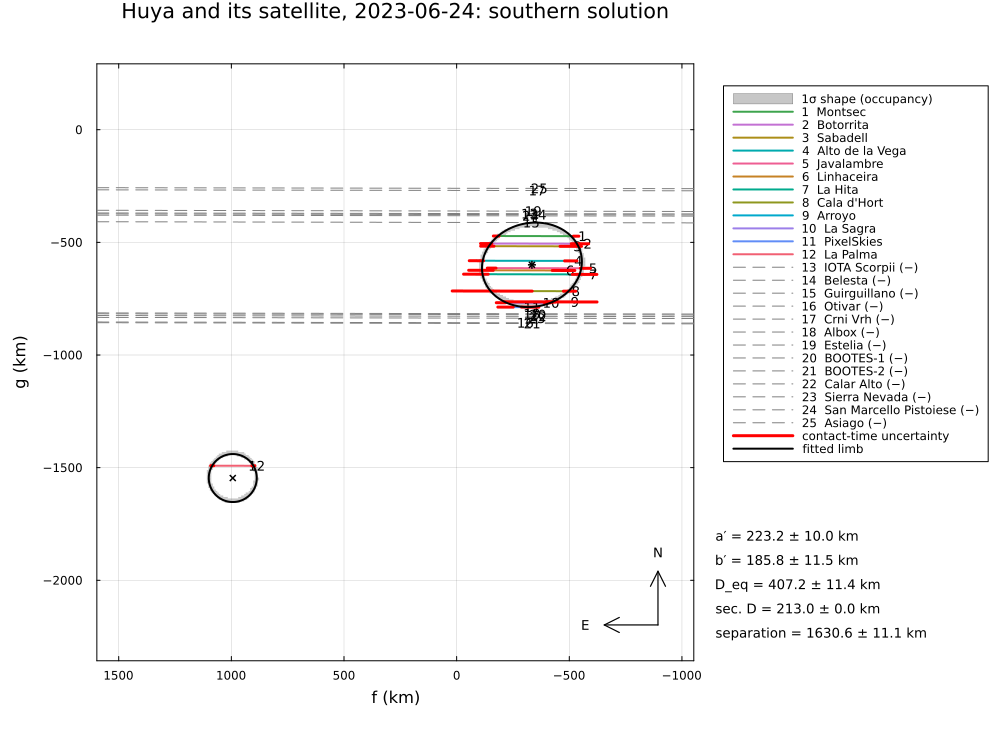

Huya and its satellite, 2023 June 24
The occultation of 2023 June 24 by (38628) Huya and its satellite, reduced from the published timings of Rommel et al. (2025) with BinaryLimb: Huya and the satellite are fitted together. Eleven chords crossed Huya, one (La Palma) the satellite, and 13 were negative. The La Palma contacts are assigned to the satellite (Contact(...; body=:secondary)).
The paper fits a circle of the published radius 106.5 km (Fornasier et al. 2013) to the single satellite chord: no negative chord is near enough to La Palma, so its centre lies on either side of the chord ("Southern" and "Northern" solutions, Table 4). The example covers:
- the two solutions of the joint fit of Huya and the satellite, compared with Tables 4 and 5;
- the satellite radius: one chord gives a lower limit only;
- the astrometry of Huya, of the satellite, and of the barycentre of the system.
The data are transcribed in examples/data/huya_20230624.jl, with the stored JPL Horizons ephemeris, so the script runs offline:
julia --project=. examples/huya_2023_satellite.jl [output_dir] (default: examples/output/huya_2023_satellite)The code is not run when the manual is built. The output after each section is that of the last run of examples/huya_2023_satellite.jl, stored in examples/output/huya_2023_satellite/output.txt.
using Occultations, Random, Printf, Statistics
using Plots
include(joinpath(@__DIR__, "data", "huya_20230624.jl"))
out = length(ARGS) >= 1 ? ARGS[1] : mkpath(joinpath(@__DIR__, "output", "huya_2023_satellite"))
rng = MersenneTwister(2023)
P = HUYA2023_PAPER
S = P.satelliteEvent and the satellite chord
ev = huya2023_event(; satellite=true)
D = ev.ca.dist_km
display(ev["La Palma"])
tr = track(ev, ev["La Palma"])
ti, te = ev["La Palma"].contacts[1].time - ev.tref, ev["La Palma"].contacts[2].time - ev.tref
L = hypot((tr(te) .- tr(ti))...)
@printf("satellite chord: %.1f km (paper %.0f ± %.0f km); a circle of %.1f km lies %.1f km from it on either side\n",
L, S.chord_km..., S.radius, sqrt(S.radius^2 - (L / 2)^2))Chord(La Palma, positive)
observer: Observer(La Palma, lon=-17.879200°, lat=28.762516°, h=2387.6 m)
span: 2023-06-24T00:52:00.00 – 2023-06-24T01:02:00.00
Contact(immersion, 2023-06-24T00:58:26.4200 ± 0.29 s, secondary)
Contact(emersion, 2023-06-24T00:58:34.4300 ± 0.3 s, secondary)
satellite chord: 182.9 km (paper 179 ± 14 km); a circle of 106.5 km lies 54.6 km from it on either sideHuya and the satellite fitted together (radius 106.5 km, as the paper)
The model: an ellipse for Huya, a circle of fixed radius for the satellite. The residuals are radial as in the paper; all negative chords are hard constraints. The two solutions are found by starting the satellite on either side of the La Palma chord.
rh = fit_limb(huya2023_event(); residual=:radial, rng=rng) # Huya alone: the starting values
mid = (tr(ti) .+ tr(te)) ./ 2
vf, vg = velocity(tr, (ti + te) / 2)
n̂ = (-vg, vf) ./ hypot(vf, vg) # normal to the chord, to its left
h = sqrt(S.radius^2 - (L / 2)^2)
c0 = (rh[:center_f][1], rh[:center_g][1])
sols = Dict{String,Any}()
for (label, side) in (("southern", -1), ("northern", +1))
sat = mid .+ side * h .* n̂
init = Dict(:center_f => c0[1], :center_g => c0[2], :equatorial_radius => rh[:equatorial_radius][1],
:oblateness => rh[:oblateness][1], :position_angle => rh[:position_angle][1], :sec_radius => S.radius,
:sep_f => sat[1] - c0[1], :sep_g => sat[2] - c0[2])
r = fit_limb(ev; model=BinaryLimb(), residual=:radial, fix=[:sec_radius], init=init, starts=1, rng=rng)
sols[label] = r
end
# name the solutions by the side of the chord on which the satellite lies (south = smaller g)
ks = sort(collect(keys(sols)); by=k -> sols[k][:center_g][1] + sols[k][:sep_g][1])
sols = Dict("southern" => sols[ks[1]], "northern" => sols[ks[2]])
for label in ("southern", "northern")
r = sols[label]
@printf("%-9s χ² = %6.2f (χ²/dof %.2f) Huya a′ = %.1f ± %.1f, b′ = %.1f ± %.1f km, PA %.1f ± %.1f°\n", label, r.chi2,
reduced_chi2(r), r[:equatorial_radius]..., r[:semi_minor_axis]..., mod(r[:position_angle][1], 180),
r[:position_angle][2])
@printf(" satellite at Δα cos δ = %+.2f ± %.2f mas, Δδ = %+.2f ± %.2f mas from Huya; separation %.0f ± %.0f km, PA %.1f°\n",
r[:sep_f][1] / D * 206264806.247, r[:sep_f][2] / D * 206264806.247, r[:sep_g][1] / D * 206264806.247,
r[:sep_g][2] / D * 206264806.247, r[:separation]..., r[:separation_pa][1])
end
@printf("paper (Table 5, mean of both): Δα cos δ = %+.2f ± %.2f mas, Δδ = %+.2f ± %.2f mas; separation %.0f km\n",
1000S.offset_arcsec[1][1], 1000S.offset_arcsec[1][2], 1000S.offset_arcsec[2][1], 1000S.offset_arcsec[2][2],
S.separation_km)
println("Both solutions fit equally well: the single chord cannot tell on which side the satellite lies.")southern χ² = 16.16 (χ²/dof 0.95) Huya a′ = 223.2 ± 10.0, b′ = 185.8 ± 11.5 km, PA 12.0 ± 12.6°
satellite at Δα cos δ = +65.30 ± 0.47 mas, Δδ = -46.54 ± 0.63 mas from Huya; separation 1631 ± 11 km, PA 125.5°
northern χ² = 16.16 (χ²/dof 0.95) Huya a′ = 223.2 ± 10.0, b′ = 185.8 ± 11.5 km, PA 12.0 ± 12.6°
satellite at Δα cos δ = +65.29 ± 0.47 mas, Δδ = -41.17 ± 0.63 mas from Huya; separation 1570 ± 11 km, PA 122.2°
paper (Table 5, mean of both): Δα cos δ = +65.46 ± 3.00 mas, Δδ = -44.40 ± 5.00 mas; separation 1603 km
Both solutions fit equally well: the single chord cannot tell on which side the satellite lies.Astrometry (Table 4)
t = Epoch(P.astrometry.epoch)
ra_, dec_, _ = ephem_radec(ev.body, t)
pos(dα, dδ) = Occultations.offset_radec(ra_, dec_, dα, dδ)
for label in ("southern", "northern")
r = sols[label]
a = astrometry(r)
r1, d1 = pos(a.offset_ra, a.offset_dec)
s_ra = (r[:center_f][1] + r[:sep_f][1]) / D * 206264806.247
s_dec = (r[:center_g][1] + r[:sep_g][1]) / D * 206264806.247
r2, d2 = pos(s_ra, s_dec)
b = astrometry(r; reference=:barycenter)
r3, d3 = pos(b.offset_ra, b.offset_dec)
# the published satellite position nearest to this one
pk = argmin(k -> abs(parse_dec(S.astrometry[k].dec) - d2), (:southern, :northern))
pub = S.astrometry[pk]
println(label, " solution (satellite ", label == "southern" ? "south" : "north", " of the chord), ", P.astrometry.epoch, " UTC:")
@printf(" Huya RA %s Dec %s (paper %s %s)\n", format_ra(r1; digits=6), format_dec(d1; digits=5),
P.astrometry.ra, P.astrometry.dec)
@printf(" satellite RA %s Dec %s (paper, \"%s\": %s %s)\n", format_ra(r2; digits=6), format_dec(d2; digits=5),
titlecase(string(pk)), pub.ra, pub.dec)
@printf(" barycentre RA %s Dec %s (equal densities, mass ratio %.3f)\n", format_ra(r3; digits=6),
format_dec(d3; digits=5), r[:mass_ratio][1])
end
println("(Huya's centre refers to the JPL orbit; the paper's to NIMA v10, so the absolute positions differ by")
println(" the difference of the orbits; the relative position of the satellite does not depend on them)")
println("The satellite positions agree with Table 4 within a few hundredths of a mas, but with the labels")
println("interchanged: the solution with the satellite south of the chord (the smaller declination) is the one")
println("labelled \"Northern\" in the paper.")southern solution (satellite south of the chord), 2023-06-24T00:58:10.9 UTC:
Huya RA 17 16 43.653349 Dec -07 00 20.11884 (paper 17 16 43.653342 -07 00 20.11836)
satellite RA 17 16 43.657735 Dec -07 00 20.16539 (paper, "Northern": 17 16 43.657738 -07 00 20.16537)
barycentre RA 17 16 43.653898 Dec -07 00 20.12467 (equal densities, mass ratio 0.143)
northern solution (satellite north of the chord), 2023-06-24T00:58:10.9 UTC:
Huya RA 17 16 43.653349 Dec -07 00 20.11884 (paper 17 16 43.653342 -07 00 20.11836)
satellite RA 17 16 43.657734 Dec -07 00 20.16002 (paper, "Southern": 17 16 43.657737 -07 00 20.16006)
barycentre RA 17 16 43.653898 Dec -07 00 20.12400 (equal densities, mass ratio 0.143)
(Huya's centre refers to the JPL orbit; the paper's to NIMA v10, so the absolute positions differ by
the difference of the orbits; the relative position of the satellite does not depend on them)
The satellite positions agree with Table 4 within a few hundredths of a mas, but with the labels
interchanged: the solution with the satellite south of the chord (the smaller declination) is the one
labelled "Northern" in the paper.The satellite's radius
With the radius free, the single chord sets only a lower limit, half its length: any larger circle through the two contacts fits as well, until it reaches a negative chord.
for R in (90.0, 100.0, 106.5, 130.0, 160.0, 200.0)
r0 = sols["southern"]
init = Dict(zip(r0.names, r0.values))
init[:sec_radius] = R
hh = sqrt(max(R^2 - (L / 2)^2, 0.0))
sat = mid .- hh .* n̂
init[:sep_f], init[:sep_g] = sat[1] - init[:center_f], sat[2] - init[:center_g]
r = fit_limb(ev; model=BinaryLimb(), residual=:radial, fix=[:sec_radius], init=init, starts=1, rng=rng)
@printf(" R = %5.1f km: χ² = %6.2f\n", R, r.chi2)
end
@printf("lower limit: D ≥ %.0f km (the chord, %.0f ± %.0f km; the paper quotes D ≥ 165 km)\n", L, S.chord_km...) R = 90.0 km: χ² = 16.25
R = 100.0 km: χ² = 16.16
R = 106.5 km: χ² = 16.16
R = 130.0 km: χ² = 16.16
R = 160.0 km: χ² = 16.16
R = 200.0 km: χ² = 16.16
lower limit: D ≥ 183 km (the chord, 179 ± 14 km; the paper quotes D ≥ 165 km)Figures
for label in ("southern", "northern")
savefig(plot(sols[label]; title="Huya and its satellite, 2023-06-24: $label solution", size=(1000, 750)),
joinpath(out, "huya2023_satellite_$label.png"))
end
println("figures written to ", out)The joint fit of Huya and the satellite, with the satellite south of the La Palma chord:

The results are discussed in Comparison with published reductions.